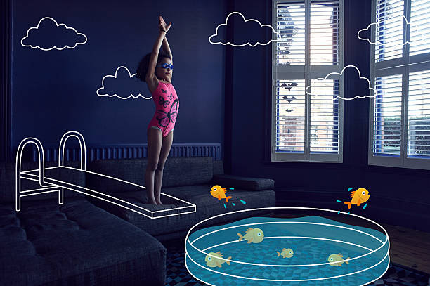

KYP
JOY
KYP A Global Platform For The Youth
The Joy Of The Youth
The youth are good at promoting joy and more of the happiness. One way to avoid being misslead by the "Joy is to enjoy what's only good for youths!
The youths are prohibited to using drugs, taking alcohol, fighting, involoving in gangs and other bad practices.
One way to avoid all the bad practices is involving in your talents e.g swimming, gaming, riding, chess and many more.

The mindset is another dangerous tool for the youth, they can develop thoughts of evil and endup doing evil. So youths must think of what is only good for ther future!
Coming together in any association such as Bible study camps can help them make good choices. Involving in gospel services can admit their thoughts to the journey of prosperity!
What sets youth apart from adults, is their ability to recognize and surrender themselves to happiness. Happiness is straightforward for children until the adults around them present a complicated version of happiness, and urge them to agree with it.
The world calls for your mindset to be ruled by the good not the evil.
Stay happy. Stay home stay safe.